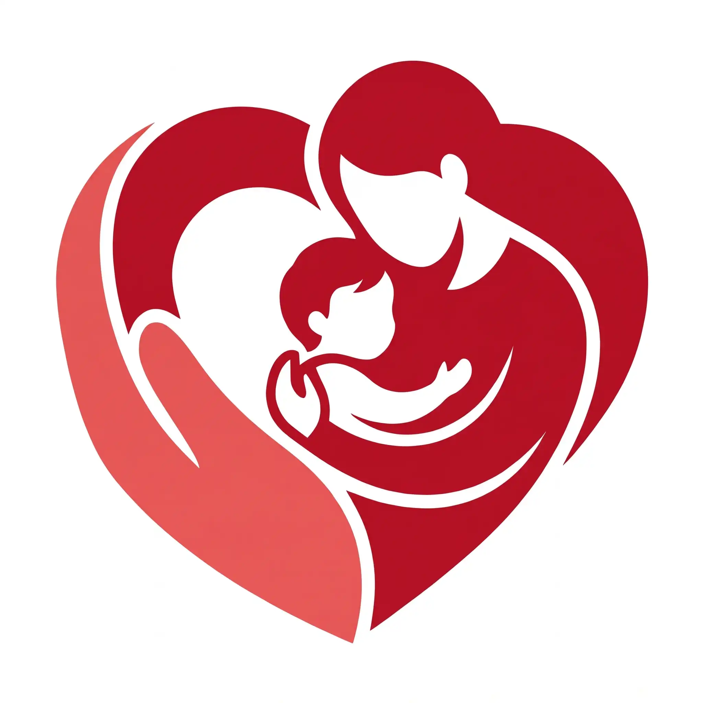
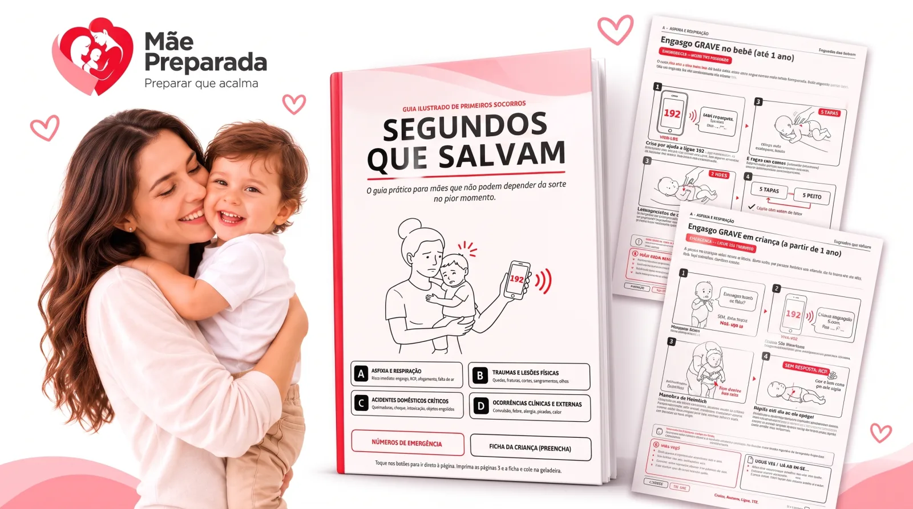
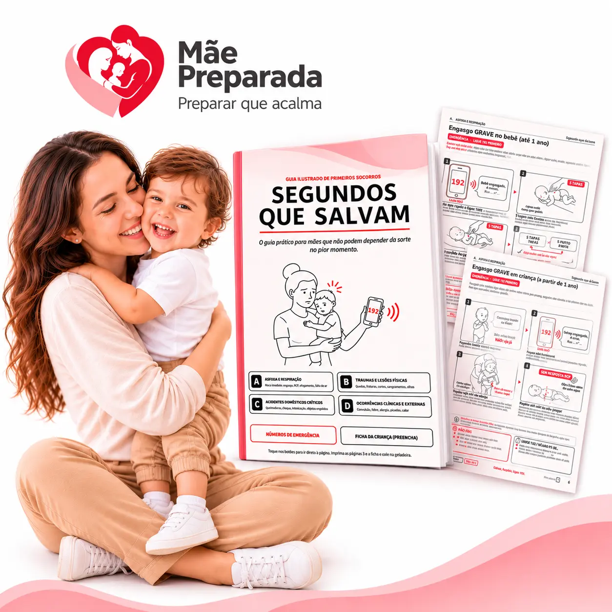

Mãe PreparadaVocê sabe parte, e a parte que falta pesa. Mesmo nas que acertou, saber a resposta não é o mesmo que executar sob pressão: no susto, o nervosismo apaga a memória.
Toque em cada situação para ver os detalhes e a conduta recomendada pelas diretrizes:
Quer testar se quem convive com seu(sua) filho(a) também saberia agir?
Segundos que Salvam é o guia ilustrado que mostra o que fazer — e o que NÃO fazer — em engasgo, queimadura, convulsão, afogamento e mais de 30 situações. Em toda página: calma, ligar 192, agir.

Dividido em 4 grandes categorias de emergência:
Engasgo, RCP, afogamento, falta de ar…
Queda com pancada na cabeça, fraturas, hemorragia, olhos…
Queimaduras, choque elétrico, intoxicação, pilhas e ímãs…
Convulsão febril, febre alta, desidratação, alergia grave, picadas…
Envie o guia para quem fica com seu(sua) filho(a) e deixe as orientações de emergência sempre acessíveis.
Médica Pediatra com especialidade em crianças pequenas e especialista em segurança infantil
Com ampla vivência no acompanhamento de bebês e na orientação de famílias, a Dra. Patrícia Costa reuniu sua experiência para que cada conduta deste guia seja rigorosamente validada, fundamentada na medicina baseada em evidências e desenhada para ação rápida.
“Na hora da emergência, nenhum pai ou mãe consegue ler parágrafos densos ou manuais técnicos. O Segundos que Salvam foi estruturado para você bater o olho e ter a certeza absoluta de como agir nos primeiros minutos.”
Todo o conteúdo do guia foi sintetizado e alinhado aos protocolos públicos das principais autoridades de saúde e atendimento de emergência:
Manuais de Prevenção de Acidentes e Primeiros Socorros na Infância
Protocolos de Suporte Básico de Vida e Lei Lucas (Lei nº 13.722)
Diretrizes de RCP e Atendimento Cardiovascular de Emergência Pediátrica
Orientações Nacionais de Intoxicações Domésticas Agudas
* Baseado em diretrizes públicas oficiais para profissionais de saúde e socorristas. Não há vínculo comercial ou endosso direto destas entidades ao material.
Relatos reais de mães que hoje têm no celular o passo a passo direto para agir com calma e segurança em qualquer imprevisto com seus pequenos.
Deslize para o lado para ver mais depoimentos →

Parcele em até 8x no cartão
Acesso imediato · Pagamento seguro pela Cakto · Baixe e use offline · Garantia incondicional de 7 dias (CDC art. 49)
Você tem 7 dias para ler, folhear e imprimir. Se achar que não é pra você, peça o reembolso e devolvemos 100% do valor. Sem perguntas.
Não. Recomendamos fazer um curso prático presencial sempre que puder. O guia funciona como consulta visual rápida na hora do susto, quando o nervosismo apaga a memória.
Você recebe imediatamente por e-mail e pela Cakto. É um PDF interativo que funciona 100% offline no celular e também pode ser impresso para ter à mão.
Você tem 7 dias de garantia incondicional (CDC art. 49) para ler, folhear e imprimir. Se achar que não é para você, devolvemos 100% do valor.